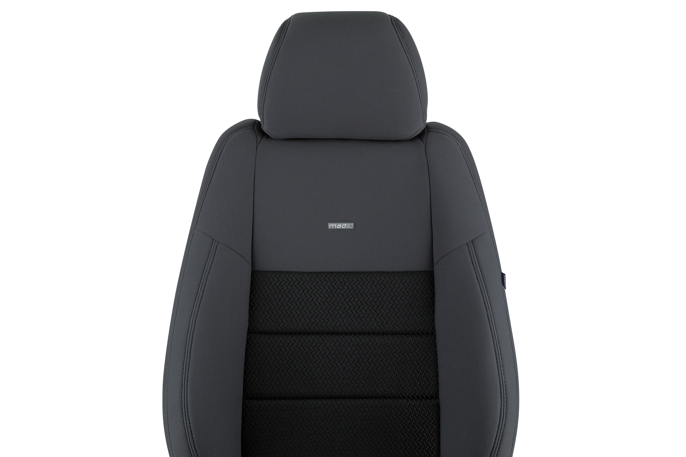
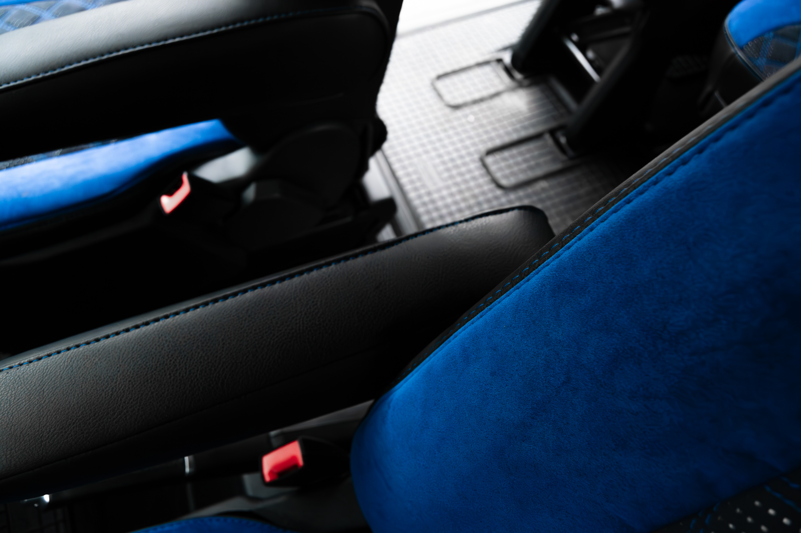
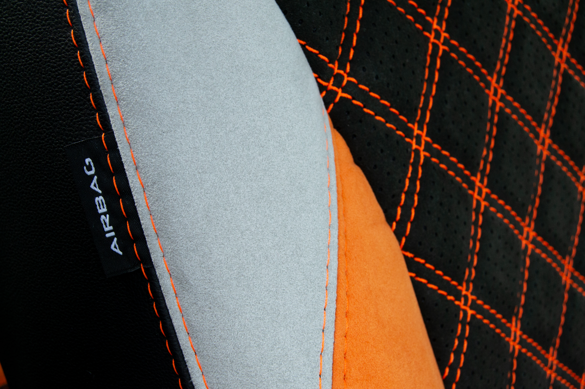
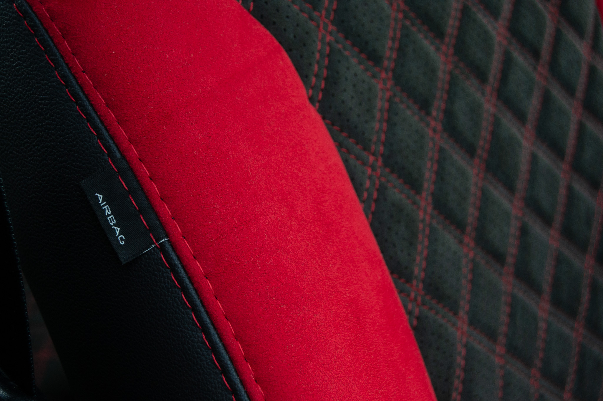
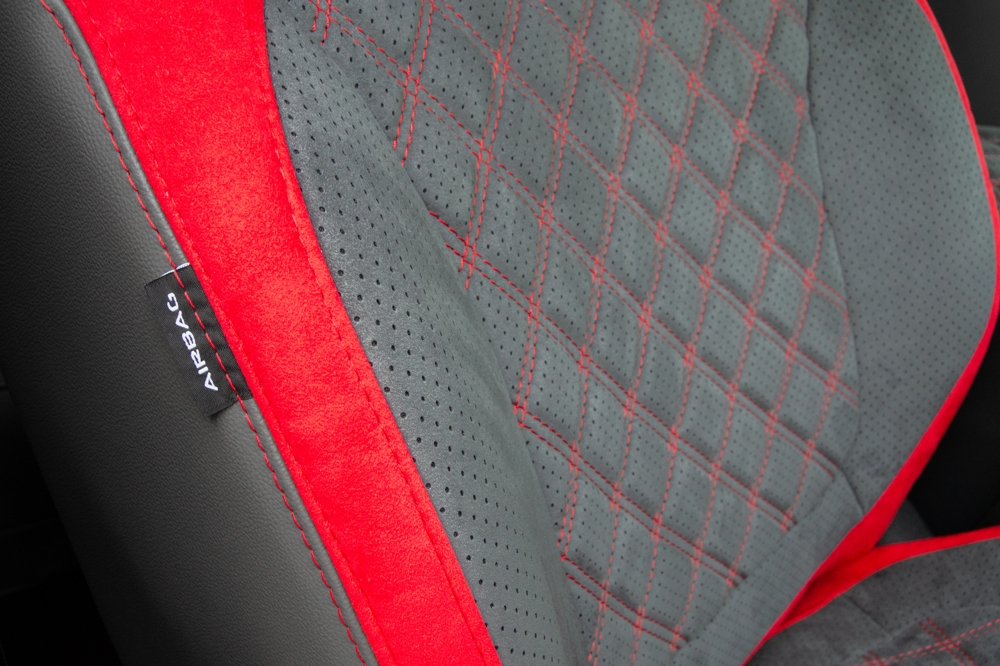
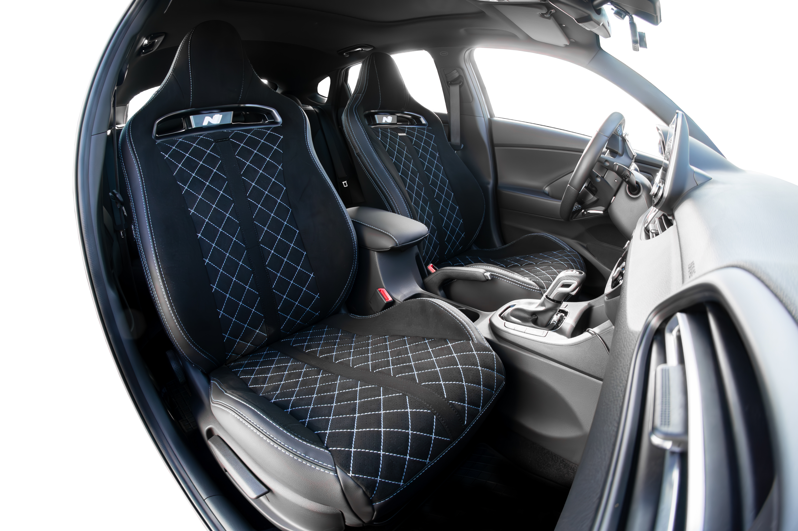
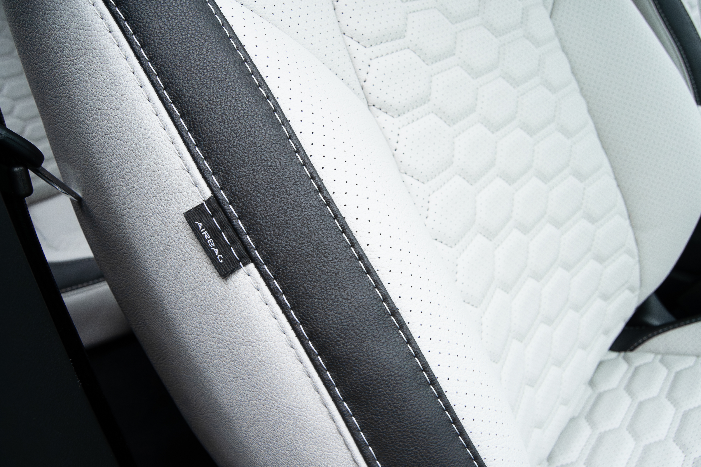

Praktikus, kedvezőbb árú választás. Classic vagy Leather Look. A MAD kollekciókra is 3 év garancia jár.

MAD árlista →MÉRETRE SZABOTT ÜLÉSHUZATOK
Autótípusra szabott üléshuzatok. Válassz a kedvezőbb MAD és a prémium Individual kollekciók közül, majd döntsd el: házhoz kéred, vagy nálunk szerelteted fel.
Két dizájnszint
Nem univerzális huzatokat kínálunk. Minden huzat a konkrét autóhoz és az üléskialakításhoz készül.
Praktikus, kedvezőbb árú választás. Classic vagy Leather Look. A MAD kollekciókra is 3 év garancia jár.

MAD árlista →Prémium anyagok, varrások és egyedi megjelenés.
 Individual árlista →
Individual árlista →A finom Alcantarától a látványos 3D varrásig. A pontos változat és az elérhető anyagok a konfigurátorban, az autó alapján választhatók ki.

Egyszerű rendelés
Először kiválasztod az autót és a kollekciót. Ezután eldöntöd: csak a huzatokat kéred, vagy kész belső teret szeretnél szereléssel az Autofólie DS-nél.
A huzatokat a konkrét autóhoz rendeljük meg és kiszállítjuk az önálló felszereléshez.
Az üléshuzatokat ellenőrizzük, szakszerűen felszereljük, és igényes, kész belső térrel adjuk át az autót Alistálon.
Személyesen is leadhatod a rendelést nálunk. Megnézheted a katalógust, az anyagokat és mintákat, és együtt kiválasztjuk az autódhoz illő összeállítást.
Valódi példák
Minden fotó a kapott partneri csomagból származik, és különböző autókat, valamint anyagokat mutat be.









Miért méretre szabott huzat
Rendelés előtt
A választásnál a márkát, modellt, évjáratot és ülésváltozatot kell megadni. A konfigurátor segít a megfelelő összeállítás kiválasztásában.
Igen. A megrendeléshez az adott autótípushoz való videós szerelési útmutatót kapsz. Ha mégsem boldogulsz vele, nálunk szakszerűen felszereljük +150 € felárért.
Vedd fel velünk a kapcsolatot, és segítünk az autó, a kívánt megjelenés és a keret alapján. A pontos rendelést gyártás előtt visszaigazoljuk.
Az alapárakat az árlistában találod. A végső árat a kollekció, az ülések száma és a választott változatok befolyásolják.
Partner konfigurátor
Az Individual konfigurátor segít a megfelelő huzattípus kiválasztásában. Csak kattintás után nyílik meg, addig külső tartalom nem töltődik be.
Kattintás után az Individual Autodesign külső konfigurátora töltődik be. A külső konfigurátorról bővebben az adatkezelési tájékoztatóban olvashatsz.
Egyeztessünk rendelés előtt
Ha nem vagy biztos a kollekcióban, az anyagban vagy a szerelésben, írj nekünk vagy hívj fel.